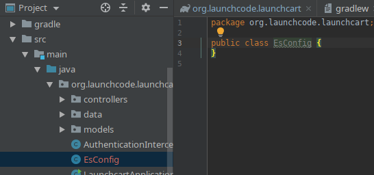

We’ll walk through the steps to integrate Elasticsearch with Spring, using the Launchcart application.
The goal is to enable fuzzy searching for items via LaunchCart’s REST API. This will require:
Spring Elasticsearch Connection
application.properties
Add the following code snippet to the bottom of your application.properties file.
application.properties
# Elasticsearch Config
spring.data.elasticsearch.cluster-nodes=127.0.0.1:9300
spring.data.elasticsearch.cluster-name=elasticsearch
es.index-name=launchcart
You will also want to add this to your application-test.properties file.
application-test.properties
# Elasticsearch Config
spring.data.elasticsearch.cluster-nodes=127.0.0.1:9300
spring.data.elasticsearch.cluster-name=elasticsearch
es.index-name=launchcart
Hint
It would be a good idea to use environment variables for your Elasticsearch information. So that your elasticsearch information won’t be posted to Gitlab, and to make this project easier to deploy in the future. You can use environment variables by using tokens that look like this: ${ES_CLUSTER_URL}:${ES_CLUSTER_PORT}. You would then need to add the environment variable to your runtime configuration.
Note
Based on the versions of PSQL, and Spring data you are using you may get a mysterious error when running your project for the first time. The error message will stop your application from running, and will mention something about Clob, or ClobContext issues. If you run into this issue, you need to add spring.jpa.properties.hibernate.jdbc.lob.non_contextual_creation=true to your application.properties, and application-test.properties files.
EsConfig.java
Create a new file at the root of your project called EsConfig.java.

Now we will want to add some code to this file.
//imports
import org.springframework.beans.factory.annotation.Value;
import org.springframework.stereotype.Component;
@Component
public class EsConfig {
@Value("${es.index-name}")
private String indexName;
public String getIndexName() {
return indexName;
}
public void setIndexName(String indexName) {
this.indexName = indexName;
}
}
The @Value annotation tells Spring to read the es.index-name property from the properties file and store it in the field indexName.
The @Component annotation tells Spring that this class is a bean that it should create and manage. The end result of setting up this class is that we can use Spring’s Expression Language to dynamically insert the value of the indexName field in our code with the syntax #{esConfig.indexName}.
bootRun
With the additions to our application.properties file, and our EsConfig file we have connected our Spring application to our Elasticsearch cluster. Re-run bootRun and check out the Tomcat logs.
You will notice we have some new additions near the bottom of the logs.
Our application is aware of the IP address and the port we configured in our application.properties file.
Check cluster
You should try querying your cluster.
curl 127.0.0.1:9200/_cat/indices
We don’t have any new launchcart indices yet, but we will soon. We still need to have spring create our index.
Create Index from Spring
ItemDocument
We need to create a new model class to represent the documents that we’ll be storing in ES, along with a corresponding repository.
Create a new package, org.launchcode.launchcart.models.es, and add the following class:
/*
* /src/main/java/org/launchcode/launchcart/models/es/ItemDocument.java
*/
import org.springframework.data.elasticsearch.annotations.Document;
import javax.persistence.GeneratedValue;
import javax.persistence.GenerationType;
import javax.persistence.Id;
@Document(indexName = "#{esConfig.indexName}", type = "items")
public class ItemDocument {
@Id
@GeneratedValue(strategy= GenerationType.AUTO)
private String id;
private Integer itemUid;
private String name;
private double price;
private boolean newItem;
private String description;
public ItemDocument() {}
public ItemDocument(Item item) {
this.itemUid = item.getUid();
this.name = item.getName();
this.price = item.getPrice();
this.newItem = item.isNewItem();
this.description = item.getDescription();
}
// Getters and setters omitted
}
Note
The @Id annotation should come from the javax.persistence package, so be sure to select the correct import.
Review the fields and constructors for this class to make sure you understand what it represents. Each ItemDocument object will be a “copy” of an Item that is suitable for storing in Elasticsearch, and which keeps track of the original item’s ID in the itemUid field.
There are two things to note about the ItemDocument class that make it different from our other persistent model classes.
- The ID field for the class is of type
String instead of Integer. We do this because Elasticsearch uses hash strings as IDs instead of integers.
- The
@Document annotation notifies Spring that this class may be stored in Elasticsearch, using the index and type names provided. Notice the index name, #{esConfig.indexName}. This uses Spring’s expression language to dynamically insert the value of the indexName property of the EsConfig bean that we created earlier. Recall that this property is set using the value of es.index-name in the properties file, so it will be different for development and test contexts.
ItemDocumentRepository
Also add a new repository, which extends ElasticsearchRepository:
/*
* src/main/java/org/launchcode/launchcart/data/ItemDocumentRepository.java
*/
import org.elasticsearch.index.query.QueryBuilder;
import org.launchcode.launchcart.models.ItemDocument;
import org.springframework.data.elasticsearch.repository.ElasticsearchRepository;
public interface ItemDocumentRepository
extends ElasticsearchRepository<ItemDocument, String> {
Iterable<ItemDocument> search(QueryBuilder queryBuilder);
}
bootRun
Let’s run bootRun again.
Check cluster
After your application is running again, try curling for indices again: curl 127.0.0.1:9200/_cat/indices.
We now have a new index named launchcart. Spring created our index for us.
Post to Elasticsearch
ItemRestController
In order to get Spring to add new documents to our index, we will have to use our new ItemDocumentRepository class. For now let’s add this functionality inside of our ItemRestController.
The changes we are about to make to our post mapping handler will utilize ItemDocumentRepository so let’s @Autowire it into our ItemRestController file first.
Towards the top of your class where you have autowired your ItemRepository add:
@Autowired
private ItemDocumentRepository itemDocumentRepository;
Update the post mapping in your ItemRestController like this:
@PostMapping
@ResponseStatus(HttpStatus.CREATED)
public Item postItem(@RequestBody Item item) {
Item postItem = itemRepository.save(item);
ItemDocument itemDocument = new ItemDocument(postItem);
itemDocumentRepository.save(itemDocument);
return postItem;
}
We have amended our PostMapping so that when it saves a new Item to our ItemRepository it also saves an ItemDocument to our ItemDocumentRepository.
ItemRestControllerTests
To test this new functionality out let’s write a new test in our ItemRestControllerTests file to make sure our post saves a new ItemDocument to Elasticsearch.
You will have to Autowire an ItemDocumentRepository into your ItemRestControllerTests file first, and then we can add a new test.
Towards the top of your Test class add:
// imports to look out for!!!
import static org.springframework.test.web.servlet.request.MockMvcRequestBuilders.*;
import static org.springframework.test.web.servlet.result.MockMvcResultMatchers.*;
...
@Autowired
private ItemDocumentRepository itemDocumentRepository;
Add the following to your ItemRestControllerTests file:
@Test
public void testPostCreatesItemDocument() throws Exception {
itemDocumentRepository.deleteAll();
Item postItem = new Item("Post test item", 22.00);
String json = json(postItem);
mockMvc.perform(post("/api/items")
.content(json)
.contentType(contentType))
.andExpect(status().is(201));
Iterator<ItemDocument> itemDocuments = itemDocumentRepository.findAll().iterator();
Assert.assertTrue(itemDocuments.hasNext());
}
This test clears out our elasticsearch index first, and then makes a post request to our ItemRestController.
We then test that our elasticsearch cluster has at least one document in it.
Fuzzy Search
ItemDocumentController
Create ItemDocumentController and implement the search method/endpoint.
/*
* src/main/java/org/launchcode/launchcart/controllers/es/ItemDocumentController.java
*/
import org.elasticsearch.index.query.FuzzyQueryBuilder;
import org.elasticsearch.index.query.QueryBuilders;
import org.launchcode.launchcart.data.ItemDocumentRepository;
import org.launchcode.launchcart.models.ItemDocument;
import org.springframework.beans.factory.annotation.Autowired;
import org.springframework.web.bind.annotation.GetMapping;
import org.springframework.web.bind.annotation.RequestMapping;
import org.springframework.web.bind.annotation.RequestParam;
import org.springframework.web.bind.annotation.RestController;
import java.util.ArrayList;
import java.util.Iterator;
import java.util.List;
@RestController
@RequestMapping(value = "/api/items")
public class ItemDocumentController {
@Autowired
private ItemDocumentRepository itemDocumentRepository;
@GetMapping(value = "search")
public List<ItemDocument> search(@RequestParam String q) {
FuzzyQueryBuilder fuzzyQueryBuilder = QueryBuilders.fuzzyQuery("name", q);
List<ItemDocument> results = new ArrayList<>();
Iterator<ItemDocument> iterator = itemDocumentRepository.search(fuzzyQueryBuilder).iterator();
while(iterator.hasNext()) {
results.add(iterator.next());
}
return results;
}
}
Spring is unable to serialize (i.e. turn into XML or JSON) an Iterable object, so we must copy each of the results into a new List. If we expect large results sets, we should use a paginated approach that only returns segments of the result set.
ItemDocumentControllerTests
Again to test this functionality out, let’s write a new test.
Create a new test file named ItemDocumentControllerTests and add the following code:
/*
* In src/test/java/org/launchcode/launchcart/ItemDocumentControllerTests.java
/*
// imports
import org.junit.Test;
import org.junit.runner.RunWith;
import org.launchcode.launchcart.models.Item;
import org.springframework.beans.factory.annotation.Autowired;
import org.springframework.test.context.junit4.SpringRunner;
import org.springframework.test.web.servlet.MockMvc;
import static org.springframework.test.web.servlet.request.MockMvcRequestBuilders.get;
import static org.springframework.test.web.servlet.request.MockMvcRequestBuilders.post;
import static org.springframework.test.web.servlet.result.MockMvcResultHandlers.print;
import static org.springframework.test.web.servlet.result.MockMvcResultMatchers.*;
@RunWith(SpringRunner.class)
@IntegrationTestConfig
public class ItemDocumentControllerTests extends AbstractBaseRestIntegrationTest {
@Autowired
private MockMvc mockMvc;
@Autowired
private ItemDocumentRepository itemDocumentRepository;
@Test
public void testFuzzySearch() throws Exception {
itemDocumentRepository.deleteAll();
Item item = new Item("Test Item Again", 42);
String json = json(item);
mockMvc.perform(post("/api/items/")
.content(json)
.contentType(contentType));
mockMvc.perform(get("/api/items/search?q={term}", "agan"))
.andDo(print())
.andExpect(status().isOk())
.andExpect(content().contentType(contentType))
.andExpect(jsonPath("$.length()").value(1))
.andExpect(jsonPath("$[0].name").value(item.getName()));
}
}
Seed Elasticsearch from Spring
In this section we will be learning how to seed our elasticsearch cluster from the data that currently exists in our database.
You will need to create two new files EsUtil.java and EsController.java. We recommend creating a new package off the root of your project named utils for your EsUtil.java file. Your EsController.java file can be created in your controllers directory.
EsUtil
After creating Esutil.java add the following code:
/*
* src/main/java/org/launchcode/launchcart/util/EsUtil.java
*/
import org.launchcode.launchcart.data.ItemDocumentRepository;
import org.launchcode.launchcart.data.ItemRepository;
import org.launchcode.launchcart.models.Item;
import org.launchcode.launchcart.models.ItemDocument;
import org.springframework.beans.factory.annotation.Autowired;
import org.springframework.stereotype.Component;
import java.util.ArrayList;
import java.util.List;
@Component
public class EsUtil {
@Autowired
private ItemRepository itemRepository;
@Autowired
private ItemDocumentRepository itemDocumentRepository;
public void refresh() {
itemDocumentRepository.deleteAll();
List<ItemDocument> itemDocuments = new ArrayList<>();
for(Item item : itemRepository.findAll()) {
itemDocuments.add(new ItemDocument(item));
}
itemDocumentRepository.saveAll(itemDocuments);
}
}
EsController
After creating your EsController file add the following code:
/*
* src/main/java/org/launchcode/launchcart/controllers/es/EsController.java
*/
import org.launchcode.launchcart.util.EsUtil;
import org.springframework.beans.factory.annotation.Autowired;
import org.springframework.http.HttpStatus;
import org.springframework.http.ResponseEntity;
import org.springframework.web.bind.annotation.PostMapping;
import org.springframework.web.bind.annotation.RequestMapping;
import org.springframework.web.bind.annotation.RestController;
@RestController
@RequestMapping(value = "/api/es")
public class EsController {
@Autowired
private EsUtil esUtil;
@PostMapping(value = "/refresh")
public ResponseEntity refresh() {
esUtil.refresh();
return new ResponseEntity("Refreshed Elasticsearch index\n", HttpStatus.OK);
}
}
bootRun and Seed
After creating these files go ahead and run your project with bootRun.
When your project is running create a few new items from the web portal.
After creating the items so they exist in the database fire off a curl request: curl -XPOST 127.0.0.1:8080/api/es/refresh.
This will hit our controller class, which calls the EsUtil class which will delete our current index, and rebuild it from the items in our database.
This will come in handy with your Zika projects next week.
Your Tasks
On your own, study the code above and make sure you understand each of the components, referring to the linked resources below as necessary. When you come across something that isn’t clear, talk through it with another student or with an instrutor.